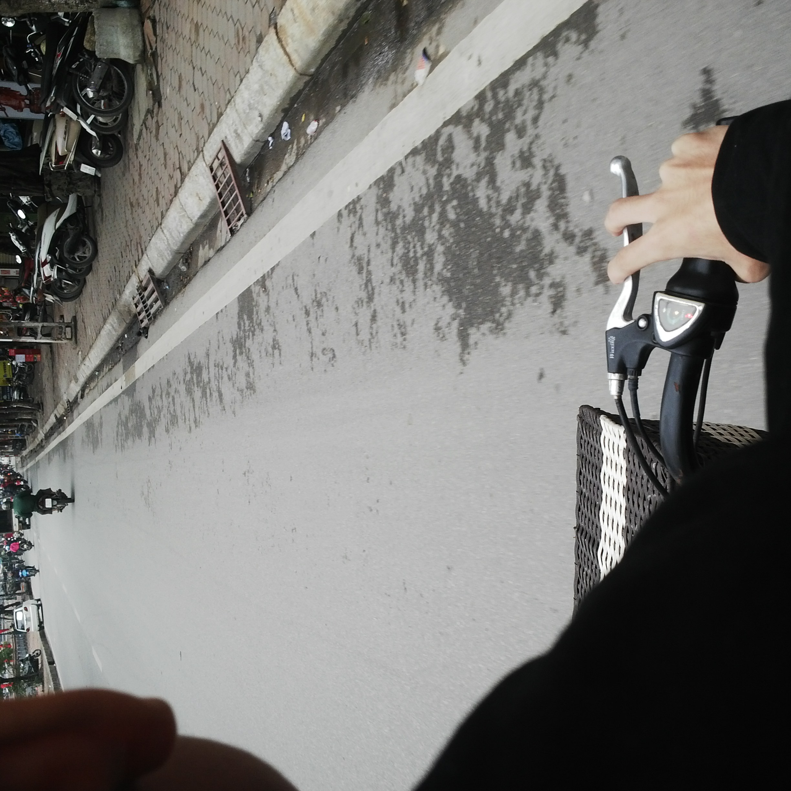

Ngày 381:
13/11/2016: Gần 300 ngày sau mới có cái mới :)) Mà do bọn mình quấn nhau nhiều, viết thư rồi lb hết rồi nên anh mới không viết vào đây :p. Đợi tuần sau anh update ở trong lb vào nhé
Thứ 2 là sinh nhật em và anh sẽ tặng em áo gấu brown cực đẹp hehe
Vèo cái 1 năm rồi này, vèo cái thi đh đấy em ạ, nên mình phải tập trung học hành hơn thôi
Rồi vèo cái cưới nhau nhỉ :3
Anh yêu em nhiều lắm lợn con ngu ngốc ạ
Đêm 94:
Nàng: "Hèm... 3 tháng nhanh nhị :3 Kiểu 2 tháng đầu em cứ lạnh lùng với anh cơ :)), rồi hư nhiều vcđ í, thế là anh bực xong chửi cho một trận =)) Giờ em ngoan rồi hihi~ Với cả nhiều lúc cãi nhau vặt vãnh vui vãi, cơ mà không gào mồm to nữa đâu, ngại vđ =))
Mong chúng mình cứ mãi như này. Yêu thương nhau nhiều hơn hơn hơn nữa. Và em sẽ cho anh thấy tình cảm của em. Yêu anh. Hihi."
Chàng: "Hèm.. 3 tháng nhanh vcđ nhị. Kiểu cả 3 tháng anh đều ngoan và tốt, mãi em mới thức tỉnh để ngoan lại :)) đi với em lúc nào cũng vui ý, bh fzone ở trường cũng được, kiểu khoác vai rồi gào nhau vui vãi :)). Mong chúng mình cứ mãi thế này ( hơi khác, có thêm ịch nữa) . Yêu em. Ngày càng nhiều."
Ngày 93: 3 THÁNG RỒI EM NHÀ ƠI
Viết thế nào cho không sến nhỉ, không lại như bọn sửu nhi bây giờ, mới yêu tí đã sướt mướt chồng yêu vợ các thứ =)).
Em thấy càng yêu anh càng như em muốn không? Người lớn, chững chạc, khoai to như ý em luôn nhé. Cứ yêu lâu vào, tôi sẽ là người đàn ông hoàn hão của em luôn.
3 tháng em cũng thay đổi nhiều lắm, làm anh đỡ khổ nhiều rồi :)). Không lạnh lùng, vô lí, ích kỉ, biết nghĩ đến cảm xúc của anh. Em cũng may, vớ được anh làm thầy nhé =)). Vừa viết vừa nghe nhạc Enrique Iglesias lại càng thấy yêu em thế nào :)). 3 tháng bọn mình nhanh nhỉ, nhanh vãi ý. Vèo cái cưới xong vèo cái có thằng Bách này =)). Trước anh kiểu lúc đang vui vẻ yêu nhau thì anh cũng không thoải mái hoàn toàn được mà toàn lo bao giờ sẽ cãi nhau ý hay bao giờ em chán. Nhưng bây giờ anh không lo gì luôn, kiểu bọn mình chả cãi nhau gì to đâu :)). Cứ "tận hưởng tình yêu" của nàng thôi.
Dạo này anh viết lắm vl, sắp còn tiếp tục gửi nàng thư số 2 nữa chứ. Thật sự anh cũng khôn biết viết gì nữa. Ờm... Anh yêu em. Chủ yêu chó. Huynh yêu tỉ. Anh nhà yêu em nhà. Bố Gia Bách yêu mẹ Gia Bách. Tu yêu My. Chàng yêu nàng.
Ơ bây giờ anh mới để ý, kỉ niệm tháng toàn anh mà em chả nói gì cơ =)). Đợi nàng tháng 4 nhé.
Yêu em.
Rất nhiều.
P/s: Gửi Gia Bách, thôi còn lâu con mới đọc được cái này =)). Đọc được thì bảo mẹ là bố yêu mẹ nhé.
Ngày 91-92:
Nàng nghĩ ra trò "Viết thư cho nhau" và chàng hưởng ứng kịch nhiệt tình hihi.
28/01: Chàng viết hết tình cảm vào thư dài vcđ cho nàng luôn. Nàng cũng viết lại nồng nàn cho chàng mặc dù hơi ngắn :))
29/01: Nàng tiếp tục gửi thư thứ 2 nồng nàn hơn thư 1 + Bonus siêu xinh do anh chụp :))
Ngày 89-90:

Đêm 26/01: Anh cũng không hiểu mệt kiểu gì mà rất căng với em. Anh nói kiểu không suy nghĩ gì, có gì nói đấy. kiểu chơi khô máu với em luôn. Hóa ra lại hay :)) Em sau khi khóc lóc nghe anh nói thì đã ngoan ngoãn hơn :))
Rạng sáng 27/01: Nàng nằm thức gần 2h vì anh căng, xong sáng mai lại đi học, nghĩ mà thương vl. Nhưng đôi khi cứ phải căng mới ngoan ra được. Lúc đấy anh nói không suy nghĩ nên có nói làm em tổn thương, anh xin lỗi. Nhưng hôm sau em ngoan vãi, yêu vl =)).
Ngày 84:
21/01: Xem phim đồng tính của anh Eddie Redmayne + sang Aeon lần đầu.
"Phim hay nhưng hẫng vcđ =)) Sang Aeon ăn uống các kiểu nhưng không được lên tầng trên cùng huhu..."
PHIM NHƯ BÒI, nhạc kiểu The theory hay vãi, diễn viên cũng hay vãi, có mỗi nội dung như bòi =))). Lại nắm tay như đôi vk ck trẻ vào siêu thị mua đồ giấu vào cặp rồi mới vào rạp. Xem xong lên Aoen chơi, quay VI ĐI Ô các thứ. Lần đầu ăn sushi nữa :)). Thích nhất là wc lung linh của nàng , hơn Hoa Hồng luôn =)). Cháo nhau tự nhiên như ở nhà luôn. Yêu em.
Ngày giận dỗi:
Anh không nhớ được ngày bao nhiêu và giận thế nào nhưng vẫn viết vào cho nhớ là mình có giận nhau em :))
Ngày 65:
02/01: Triễn lãm "Kí ức Hà Nội"
"Anh ấy đến muộn 1 tiếng hơn 30 phút. Vừa đến nơi đã đi tè. Trước cửa nhà vệ sinh đã cho ra đời 1 bức ảnh siêu ngầu của anh ấy. Chụp ảnh. Ăn."
Anh ấy phải xong việc rồi phóng như dân tổ đến với em ấy, xong bị em ấy dỗi cho, rất may anh ấy đẹp trai nên em ấy không dỗi lâu. Đến đã cho ra đời 1 bức ảnh siêu xinh của em ấy trên xe điện. Đi tè. Chụp ảnh. Ăn.
Ngày 61: 2 ĐỨA ĐƯỢC 2 THÁNG =)) đhs tính cưới nhau này nọ mà mấy tháng bọ đã phải tính :))
29/12: Nhanh vãi anh thề :| kiểu cả tháng cứ vui vui yêu nhau không ngờ qua 1 tháng luôn rồi, tí quên ngày hihi. Thực ra trong tháng nhiều lúc cũng bực vcl nhưng mà chuyện nhỏ nên 6 tiếng là xong. Đùa anh dễ ghen vãi nhưng mà cũng dễ quên :| 1 tháng thì nàng càng ngày càng ngoan nhé, nhưng nhiều khi vẫn câng câng lên nhìn muốn bóp cho phát cho đỡ láo. Anh tự thấy anh ngoan vl ý, nhưng mà có gì nàng thấy không ổn cứ nói nhé. Gầy béo thì anh chả cố đâu, ngại lắm =)) Violin thì anh sẽ tập cho 1 bài nhưng mà anh ko hứa là gần đây đâu, bây giờ có lắm cái muốn học vl mà toàn lười, vilon để sau nhé *Icon trái tim, không viết icon được tại nó trùng kí hiệu code :)). Viết gì nữa nhỉ :|
À viết giống em.
Em. Đáng yêu. Thông minh mà hơi tự ti. ( Ngồi viết đi viết lại rồi lại xóa đoạn mông to, không biết có nên viết vào không =)) )
Em cũng bớt lạnh lùng đi rồi, thực ra kiểu em lạnh lùng thì anh vẫn chịu được, kiểu 6 tiếng là hết giận ý ( anh giỏi vl) nhưng mà anh sợ em cứ lạnh lùng thì em chán lúc nào anh cũng không biết :| Thề, yêu sợ nhất là nàng bất ngờ chán không lí do…
Thế thôi nhé, bây giờ bây giờ anh còn phải viết nốt cái web đã, quên mất mai đã đến ngày mà chưa kịp làm gì :((
Yêu em. Yêu tỉ. Yêu muội. Yêu nàng. Yêu mặt trời.
Ngày càng yêu.
สุขสันต์วันครบรอบ
бештар туро дӯст медорам
Increasingly love you
Ngày 59:
27/12: Chàng đọc thiệp.
Ngày 58:
<26/12: Nàng ngồi viết thiệp.